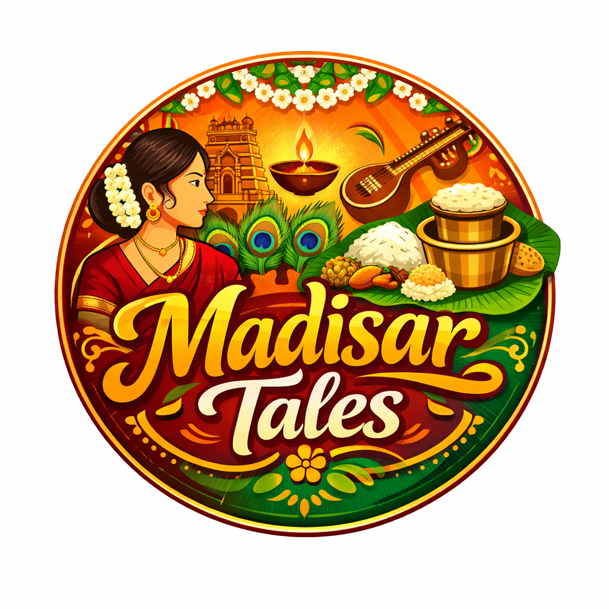

.
Madisar Tales brings the soul of traditional South Indian Brahmin cuisine to your plate. Inspired by age-old recipes and home-style cooking, we serve food rooted in purity, simplicity, and rich heritage.
Every dish is thoughtfully prepared using authentic ingredients and traditional methods, evoking memories of festive meals and family gatherings.
At Madisar Tales, food is more than taste — it’s a story of culture, warmth, and togetherness.
.